Introduction
An accurate pitch tracker has many useful applications, whether for creating interactive electroacoustic compositions, music transcription, ethnomusicological research and numerous others. Designed for the Csound sound synthesis and signal processing language, PVSPITCH is an opcode that can be utilised for such purposes. The opcode performs a mathematical analysis upon Csound's phase vocoder data streams and from this examination, ascertains what it determines to be the signal's pitch. The algorithm handles well many types of signals, including those missing various harmonics, even a fundamental, and also signals with inharmonic partials. The only signal restrictions are that it be single-voiced, strongly-pitched and slowly-changing.
This paper introduces the opcode and illustrates PVSPITCH's pitch determination algorithm. Schouten's pitch determination hypothesis and the concept of tonal fusion are briefly discussed as the background to the opcode's development. Three cases studies are also explored to demonstrate the accuracy of the algorithm.
I. Developmental Background
The Place Theory of Pitch Perception
For work that earned him the Nobel Prize, the Hungarian scientist Georg von Békésy devised ingenious experiments observing the vibration of the basilar membrane within the inner ear in reaction to pure tones. The displacement envelope of the membrane would generate a bulge traveling down its length. The position of peak displacement is frequency specific, with low notes causing motion towards the thicker apex of the structure and higher notes displacing maximally near the thinner base of the membrane. In other words, a frequency analysis of incoming sounds is performed at this stage of the hearing process. This information is passed onto the brain for further processing via the neural firings of tiny hair cells on the membrane.
This phenomenon forms the basis of the Place theory of pitch perception, as the location, i.e. “place”, of the peaks on the basilar membrane indicate the frequency components of incoming signals. The theory proposes that the brain examines the relationship between these partials and pitch is determined from the nature of that relationship. The exact details of that examination are disputed, but postulates have been formed by various academics.
The Higher Neural Processes of the Brain
One such academic, J. F. Schouten suggested that the pitch of the sound is the highest common factor with all the components. He supported his claims by experimenting with synthetic tones whose spectrum could be generated to have any desired components. His hypothesis explains how sounds that are missing various harmonics, even the fundamental, can be judged to have the pitch equal to the fundamental frequency.
That sounds lacking various components can be ascribed pitch is explained by the concept of tonal fusion. It seems that when the brain deems the partials of a sound adequately harmonic, the fusion of these pure tone components into one pitch takes place. The fusion only occurs if the harmonics in the sound can be viewed as members of a particular harmonic series, or a close approximation thereof. This explains why sounds with incomplete harmonic structure and sounds that do not have exact integer relationships amongst their partials exhibit the pitch of a particular fundamental frequency: the skeleton of that fundamentals harmonic series is outlined by the given sonic constituents.
Pitch then can be seen as the recognition of a harmonic series by
the brain. In fact, the brain seems to impose a further restriction
on the harmonics of the sounds it perceives: they must lie adjacent or
near adjacent in the harmonic series. Schouten showed this in an
experiment involving artificial sounds. A tone was generated with
three components: 1040 Hz, 1240 Hz, and 1440 Hz. The pitch perceived
by participants of the experiment was approximately 207 Hz, as the components
roughly correspond to the fifth, sixth and seventh harmonics of the harmonic
series of that frequency. Schouten termed the fundamental frequency
perceived under these circumstances as the “residue pitch”. This
is most interesting, as these harmonics do have a true fundamental frequency
at 40 Hz where they are the 26th, 31st and 36th harmonics,
respectively. In order to give an accurate representation of the
pitch that might be perceived by our auditory system, a pitch tracking
algorithm must incorporate this detail.
II. The Operation of PVSPITCH
The pitch detection algorithm implemented by PVSPITCH is based upon Schouten's hypothesis of the neural processes of the brain used to determine the pitch of a sound after the frequency analysis of the basilar membrane. Except for some further considerations, PVSPITCH essentially seeks out the highest common factor of an incoming sound's spectral peaks to find the pitch that may be attributed to it.
Peak Isolation
The first step of the algorithm is to analyse a frame of the input signal using the phase vocoder. The result of this process is amplitude and frequency parameters for the sinusoidal oscillators needed to re-synthesise that signal frame. As the prefix of the opcode name might indicate, advantage is taken of Csound's suite of phase vocoder stream opcodes in order to obtain the spectral coefficients of the signal.
In general, input sounds that exhibit pitch will as exhibit peaks in their spectrum according to where their harmonics lie. However, when speaking in generalities, it is important to be aware of the exceptions. Some sounds whose spectral representation is continuous can impart a sensation of pitch. Such sounds are explained by the centroid or center of gravity of the spectrum and are beyond the scope of the method of pitch detection implemented by PVSPITCH.
With the spectral information now available, the program locates the peaks, these being the strongest components of the sound. A peak is defined as a value whose amplitude is bigger than both its neighbours and also larger than a threshold value, provided to the algorithm by the user. The threshold parameter is of utmost importance, as adjusting it can introduce weak yet significant harmonics into the calculation of the fundamental. However, bringing the threshold too low would allow harmonically unrelated partials into the analysis algorithm and this will compromise the method's accuracy. These initial steps emulate the response of the basilar membrane by identifying physical characteristics of the input sound.
Highest Common Factor
The execution of Schouten's hypothesis of the further sonic processes of the brain begins here. The frequency values of the peaks in the phase vocoder data are stored in an array. All of the frequency values in the array are assumed to be the harmonics of the input signal and the highest common factor between all these values is the fundamental frequency. There exists many elegant algorithms for obtaining the greatest common divisor of a set of integers but we are not restricted to the integers. Also, inharmonicity of any of the partials would render these algorithms incapable of determining even an approximate solution. For these reasons, the concept of an inharmonicity factor is introduced.
Pitch Candidates and Partial Inharmonicity
The inharmonicity factor is a numeric value inversely proportional to the likelihood of each potential fundamental frequency candidate to be the fundamental frequency of the partials of the sound. These candidates are calculated from the lowest frequency peak present in the peak array, as that peak must be the either fundamental frequency, first harmonic, second harmonic and so on. Candidates are tested as long as they fall within the audible bandwidth; fundamental frequencies are not tested if they fall below 20 Hz.
To ascertain the inharmonicity factor for a pitch contender, each fundamental frequency possibility is divided into each of the peaks. The remainder from each division indicates the relationship between the partial and the fundamental. If the remainder is zero, then the numbers have an integer relationship and are completely harmonic otherwise the partial being examined falls outside the harmonic series of the candidate frequency. The distance from an integer quotient is calculated and, in keeping with the logarithmic perception of pitch, this value is divided by the peak frequency value being tested to scale it. This is a measurement of the inharmonicity of a particular partial in relation to a particular fundamental frequency candidate. For every pitch candidate, these measurements of the inharmonicity for each partial are summed and the result is the inharmonicity factor for that particular pitch candidate. As the fundamental frequency with the lowest inharmonicity conforms best to the harmonic series, it is chosen as the best pitch candidate of the sound.
Partial Adjacency
The phenomenon of the residue pitch of a certain tones shows the importance attached to partial adjacency to the perception of pitch by the auditory system. This fact is taken into account PVSPITCH by weighting those pitch candidates that give rise to neighbouring components more heavily than those which do not. If a sound has multiple harmonics, a successful pitch candidate must agree that at least one pair of partials is separated by a distance of not less than 3 times the fundamental frequency.
Harmonic Agreement of Pitch Frequency
The process of ascertaining a fundamental candidate relies purely on the first peak found in the spectrum of the sound. The pitch of a waveform will be required to be more representative of all the sound's partials. If any partial is even slightly inharmonic with the best pitch candidate, its harmonic number will not be an integer. The frequency of the fundamental whereby each partial's harmonic number is the closest integer is determined. The average of all these frequency values is then taken and that is determined to by the pitch of the input waveform.
Inappropriate Analysis Signals and Primitive Transient Detection
It is important to remember that the input to the PVSPITCH opcode is assumed to be characterised by strong partials within its spectrum. If this is not the case, the results outputted by the opcode may not bear any relation to the pitch of the input signal. If a spectral frame with many unrelated partials was analysed, the greatest common factor of these frequency values that allows for adjacent “harmonics” would be chosen. Thus, noisy frames can be characterised by low frequency outputs of PVSPITCH.
This fact allows for a primitve type of instrumental transient detection, as the attack portion of some instrumental tones contain inharmonic components. Should the lowest frequency of the analysed melody be known, than all frequencies detected below this threshold are inaccurate readings, due to the presence of unrelated partials.
Signal Amplitude
In order
to facilitate efficient testing of the PVSPITCH algorithm, an amplitude
value proportional to the one in the observed in the signal frame is
also outputted. The results of PVSPITCH can then be employed to
drive an oscillator whose pitch can be audibly compared with that of
the original signal. This value is ascertained by adding the amplitudes
of the individual components isolated by the phase vocoder analysis and
scaling appropriately.
III. Results
Three investigations were carried out to examine the accuracy of the pitch detection algorithm implemented. To offer a challenge to the method, a variety of instruments were chosen for analysis: a clarinet, a violin and the human voice. Each instrument has its individual timbre and acoustic characteristics and would pose different harmonic combinations for the pitch detector. Alongside the musical notation of the passages performed, graphs of the results are presented, showing the detected pitch against time.
The Voice
The human voice operates by a flow of air from the lungs being modulated by the vocal cords, or folds, and resonated by various regions of the vocal tract. The pitch of the note is determined by the vibration frequency of the vocal folds, but its timbre is greatly affected by the resonance regions. Singers are trained to manipulate the vocal tracts in such a way to produce the desired tone.
Charts 1 and 2 show the passages performed by the vocalist. The pitch tracker works extremely well in determining the pitch of the sung notes, even the small frequency deviations. The phenomenon known as vocal drift is clearly observed, whereby slight alterations of pitch are made before the signer settles on the appropriate note.
The pitch tracker also illustrates other details of the performance. It can be seen in Chart 1 that even though the singer attempted to sing a D harmonic minor scale, the sixth degree of the scale was sharpened while descending. In Chart 2, the pitch tracker also captures the wide vibrato of the longer notes.
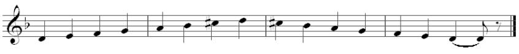
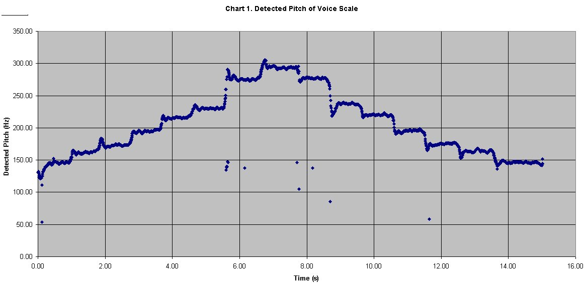
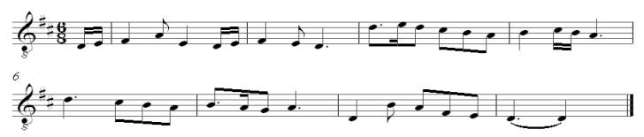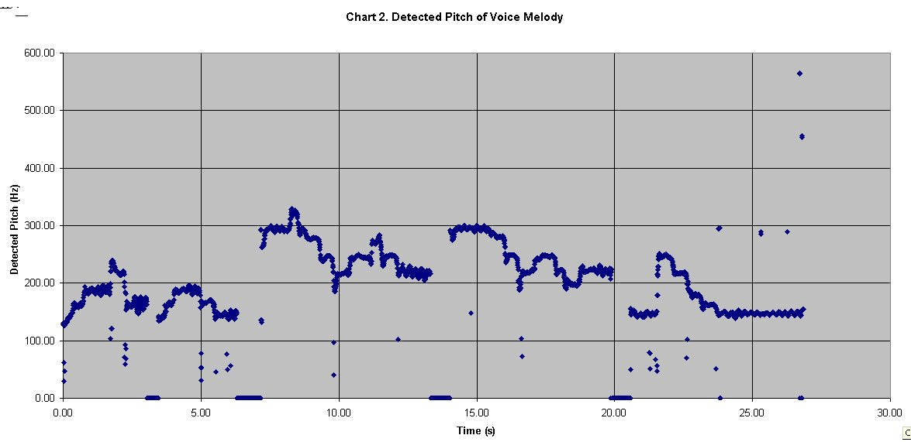
The Violin
The violin is a chordophone, a musical instrument whose tone is produced by a vibrating string. The strings of a violin are set into vibration by bowing, though sometimes they are plucked. In chordophones, the vibrations of this strings is typically amplified by a resonator, and it is the acoustic characteristics of the violin's resonant wooden body that is responsible for the quality of tone produced from it. The technique of the violinist also contributes greatly to the harmonics of the resultant tones.
In studio, an ascending and descending major scale on D5 and a brief melody were recorded for analysis. The passages played and the resultant detected pitches can be seen on the charts 3 and 4.
In Chart 3, the step-like motion of the scale is clear to be seen. The pitch tracker detects unusual pitches at the beginning of the notes, indicating the difficulties posed by onset transients. Also, poor bow-string contact introduces noisy elements, particularly obvious on the G5 note when the scale is descending. These superfluous inharmonic components confuse the detector.
Chart 4 shows the detected pitches of the violin melody. Transients again prove the biggest inconsistencies and other pitch anomalies can be attributed to inadvertent string contact on the part of the player.
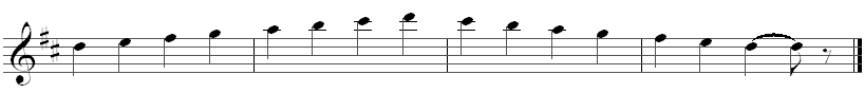
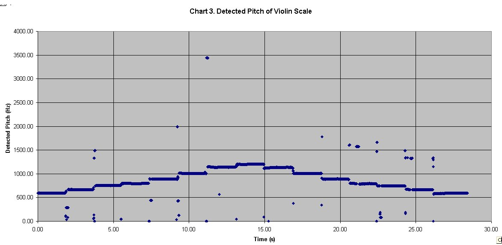
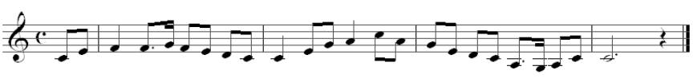
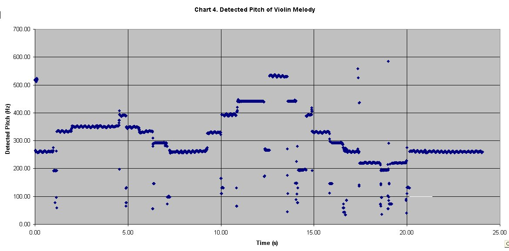
The Clarinet
The clarinet produces its characteristic tone by the vibrations of a column of air being excited by the movements of a mechanical reed. The clarinet is therefore classified as an aerophone. For all intents and purposes, the instrument can be viewed as a tube with one open end, meaning that only odd harmonics will be present in its spectrum. The resonance of the tube is also very important for the tone quality.
The scale and melody of the recorded examples can be seen on charts 5 and 6. The pitch of both excerpts are tracked very well, with any anomalies being readily explained by the breath of the musicians and the clicking of the clarinets keys as notes are changed.
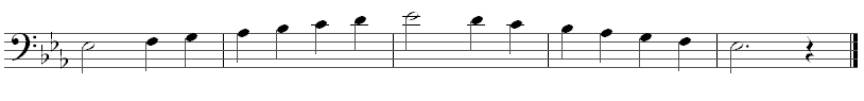
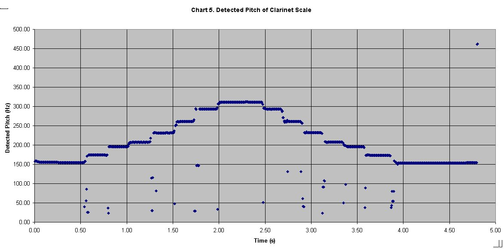
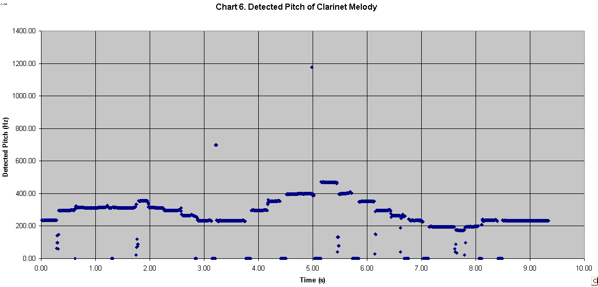
IV. Conclusion
The pitch
tracker presented in this thesis can be very useful depending on its
intended purpose. It has been shown that the range of sounds for
which it was designed, i.e. those sounds that are strongly pitched, it
can be very accurate, plotting the even slight frequency deviations like
vocal pitch scoops and vibrato. Failure to recognise the correct
pitch at some points during the analysis of the examples was due to when
the portion of the sounds did not adhere to this set criterion or perhaps
the pitch of the incoming signal changes to rapidly to be captured correctly
by the window of analysis. For monophonic signals that are strongly-pitched
and slow-changing as a pitch tracker, PVSPITCH works sufficiently well
for most purposes.
Acknowledgements
I would like to acknowledge the guidance of Dr. Victor Lazzarini of the Music Technology Laboratory at the National University of Ireland, Maynooth, for his help with this article.
Selected bibliography and further reading:
Arfib, D., Keiler, F. and Zölzer, U.: 'Time-frequency Processing', DAFX – Digital Audio Effects, ed. Udo Zölzer (London: John Wiley & Sons, Ltd. 2002), pp. 237-297.
Arfib, D., Keiler, F. and Zölzer, U.: 'Source-Filter Processing', DAFX – Digital Audio Effects, ed. Udo Zölzer (London: John Wiley & Sons, Ltd. 2002), pp. 299-372.
Campell, Murray & Greated, Clive: The Musician's Guide to Acoustics (London: J. M. Dent & Sons Ltd. 1987).
Dolson, Mark: 'The Phase Vocoder: A Tutorial', The Computer Music Journal, 10(4):14-27. MIT Press, Cambridge, Mass.
ffitch, John: 'Extending Csound', The Csound Book, ed. R. Boulanger (Cambridge, Mass.: MIT Press. 2000), pp. 599-612.
Gerhard, D.: 'Pitch Extraction and Fundamental Frequency' PDF file, available from http://www2.cs.uregina.ca/~gerhard/publications.html, accessed 25 July 2005.
Howard, David M. & Angus, James: Acoustics and Psychoacoustics (Oxford: Focal Press. 2nd edn 2001).
Lazzarini, V.: "Extensions to the Csound Language: from User-Defined to Plugin Opcodes and Beyond". Proc. Of the 3rd Linux Audio Developer's Conference, Zentrum fuer Kunst- und Medientechnologie, Karlsruhe, Germany, 2005.
Lazzarini, V.: "Developing Spectral Processing Applications". 2nd Linux Audio Developers Conference (LAD2), Zentrum fuer Kuenst und Medientechnologie, Karlsruhe, Germany, 2004.
Lazzarini, V.: "Developing User-Defined and Plugin Opcodes". PDF file, available from http://www.csounds.com/, accessed 12 July 2005.
Mulgrew, B., Grant, P. & Thompson, J.: Digital Signal Processing: Concepts and Applications (London: MacMillan Press Ltd. 1999).
Rabiner, L. R., Cheng, M. J., Rosenberg A. E. & McGonegal, C. A.: “A Comparative Performance Study of Several Pitch Detection Algorithms”, IEEE Trans. Acoust., Speech and Signal Processing, vol. ASSP-24, pp. 399-418, Oct. 1976.
Rabiner, L. R.: “On the Use of Autocorrelation Analysis for Pitch Detection”, IEEE Trans. Acoust., Speech and Signal Processing, vol. ASSP-25, pp. 24-33, Feb. 1977.
Roads, Curtis: The Computer Music Tutorial (Cambridge, Mass., The MIT Press. 2000)
Serra, Marie-Hélène: 'Introducing the Phase Vocoder', Musical Signal Processing, eds. C. Roads, S. T. Pope, A. Piccialli and G. De Poli (Lisse: Swets & Zeitlinger B. V. 1997), pp. 31-90.
Slaney, Malcolm and Lyon, Richard, "A Perceptual Pitch Detector," Proceedings of the International Conference of Acoustics, Speech, and Signal Processing, 1990, Albuquerque, New Mexico.